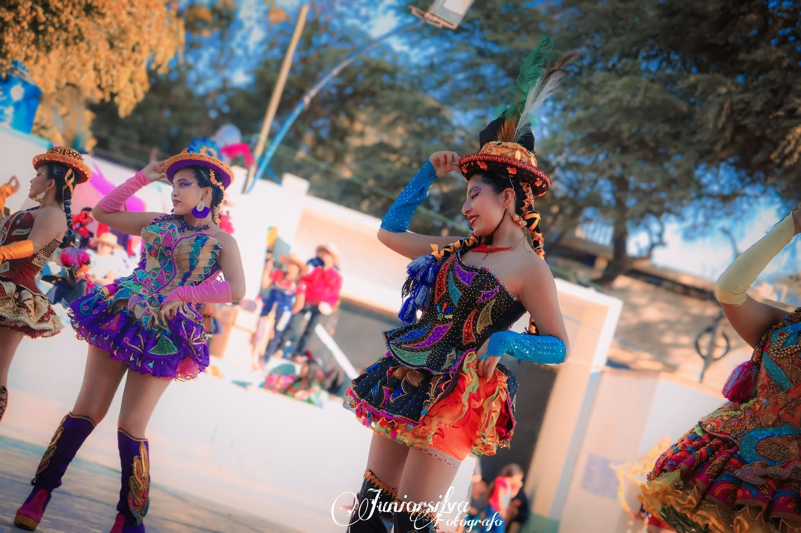
Concurso de Danzas y Estampas Folklóricas
Catacaos, Color y Tradición
Celebrando la identidad, el arte y la riqueza cultural del Perú.
Próxima edición
Muy pronto anunciaremos novedades del concurso.
00Días
00Horas
00Minutos
00Segundos
Sobre el concurso
Una fiesta de cultura, tradición y danza
Catacaos, Color y Tradición es un espacio cultural dedicado a promover las danzas folklóricas, la identidad nacional y el talento artístico de agrupaciones provenientes de distintas partes del país.
Leer más →
Un concurso que sigue creciendo
5+
Ediciones realizadas
25+
Agrupaciones participantes
35+
Danzantes en escena
2500+
Espectadores y visitantes
Momentos importantes
2017
Nace el concurso
Primera edición de Catacaos, Color y Tradición.
2020
Edición especial
El concurso se adapta a nuevos formatos y mantiene viva la tradición.
2023
Retorno presencial
La danza vuelve a reunir a agrupaciones y público en Catacaos.
2024
Consolidación
Una edición que reafirma el crecimiento cultural del concurso.
Palmarés histórico
Agrupaciones más destacadas
Grupos que han logrado más primeros, segundos y terceros lugares en la historia del concurso.
Categoría General
🥇 Más campeonatos

E.C.M. Tierra de Sol
2 títulos

A.F. Sentimiento y Corazón
2 títulos
🥈 Más subcampeonatos

C.C. Mamá Gusti
2 veces
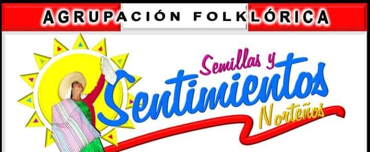
A.F. Semillas y Sentimientos Norteños
1 vez
🥉 Más terceros lugares

B.F. Raymi Danzas
1 vez
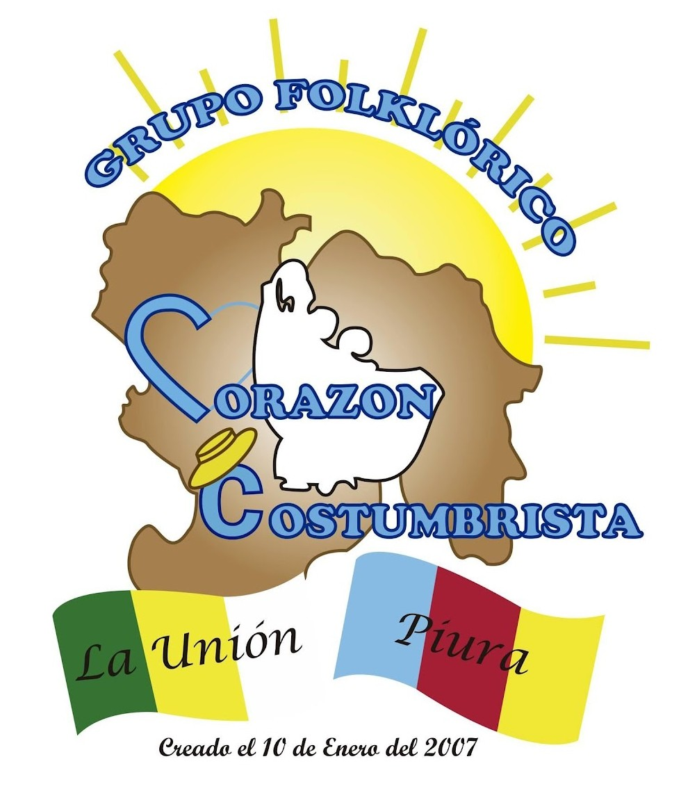
G.F. Corazón Costumbrista
1 vez
* En caso de empate en cantidad de títulos, subcampeonatos o terceros lugares, la posición destacada corresponde a la agrupación que obtuvo dicho logro primero en la historia del concurso.
Categoría Infantil
🥇 Más campeonatos
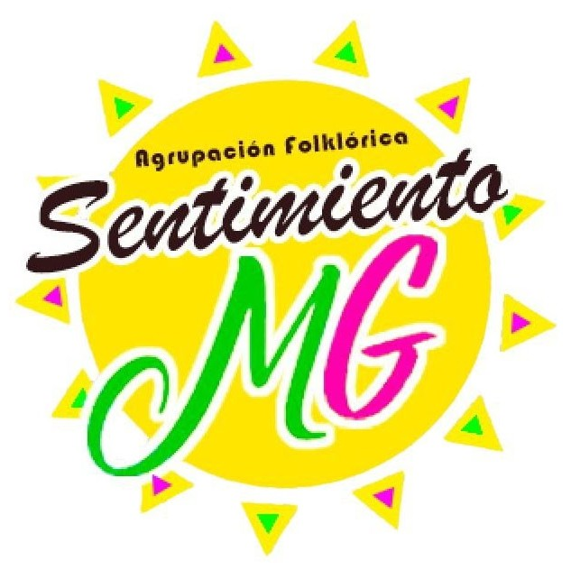
A.F. Sentimiento MG
1 título
🥈 Más subcampeonatos
G.F. Corazón Costumbrista
1 vez
🥉 Más terceros lugares
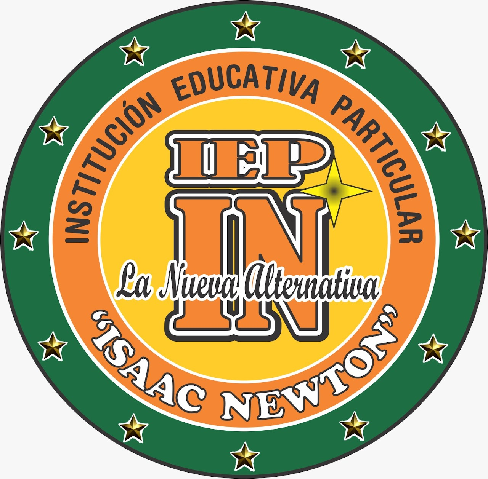
I.E.P. Issac Newton
1 vez
* En caso de empate en cantidad de títulos, subcampeonatos o terceros lugares, la posición destacada corresponde a la agrupación que obtuvo dicho logro primero en la historia del concurso.
Resumen histórico
Tabla de palmarés general
| Rank | Agrupación | 🥇 | 🥈 | 🥉 |
|---|---|---|---|---|
| 1 | A.F. Sentimiento y Corazón | 2 | 1 | 0 |
| 2 | E.C.M. Tierra de Sol | 2 | 0 | 1 |
| 3 | C.C. Mamá Gusti | 1 | 2 | 1 |
| 4 | E.C. Perú Ritmo y Color | 1 | 0 | 1 |
| 5 | A.F. Semillas y Sentimientos Norteños | 0 | 1 | 0 |
| 6 | G.F. Corazón Costumbrista | 0 | 0 | 1 |
| 7 | B.F. Raymi Danzas | 0 | 0 | 1 |
Recorrido histórico
Ediciones destacadas
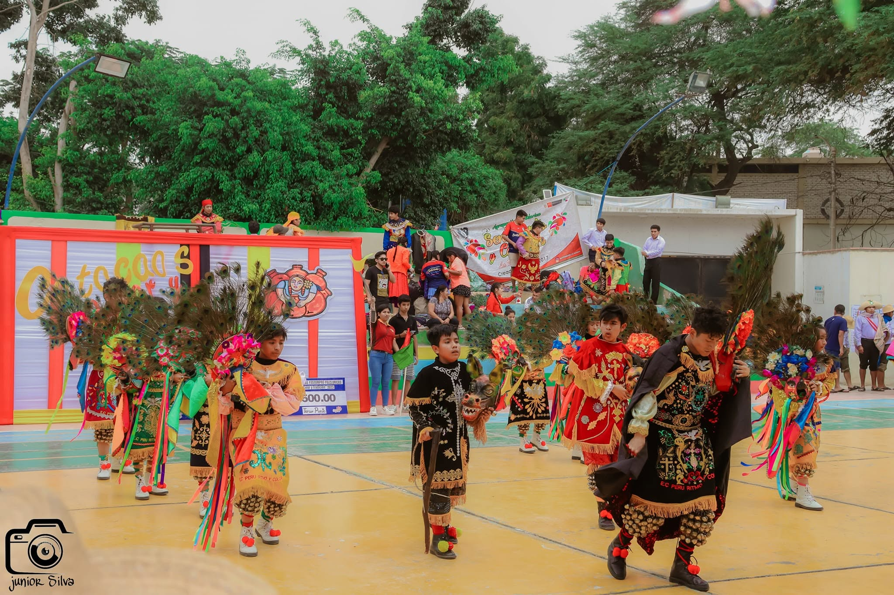
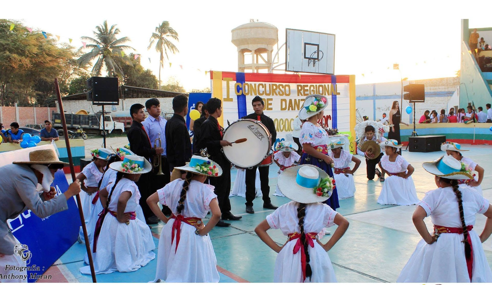
Momentos que se viven en escena

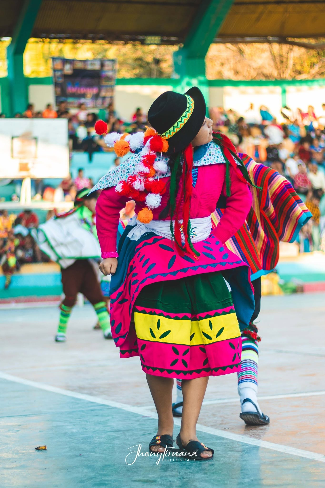
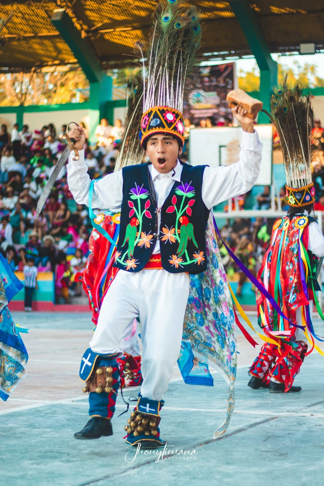
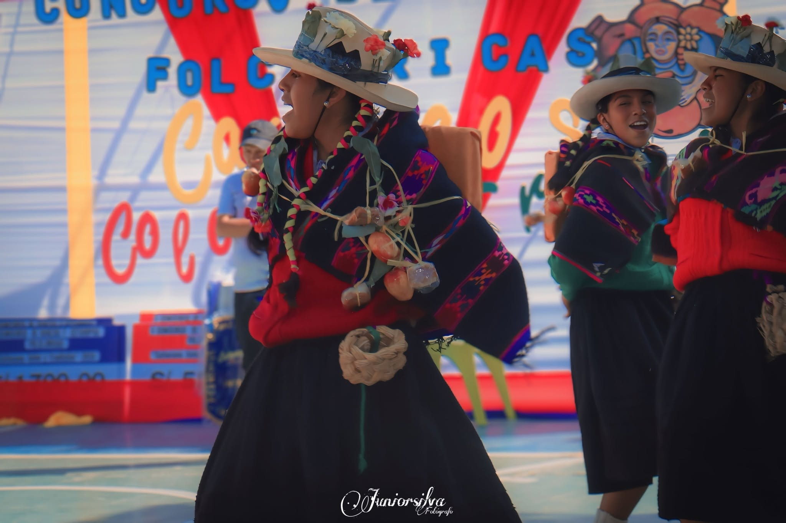
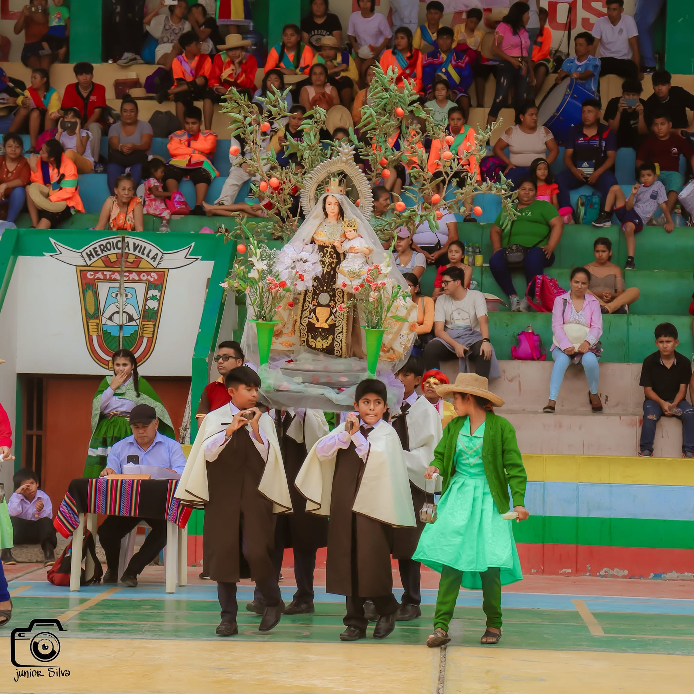
Ganadores de CCT
Reconociendo el talento artístico
Conoce a las agrupaciones que han dejado huella en cada edición del concurso.
Ver ganadoresVive la experiencia
🎥 Video de @jhony_timana
Organizado por

Grupo Folklórico
Pasión y Sentimiento Cultural
Promoviendo el arte, la cultura y las tradiciones de nuestro Perú.